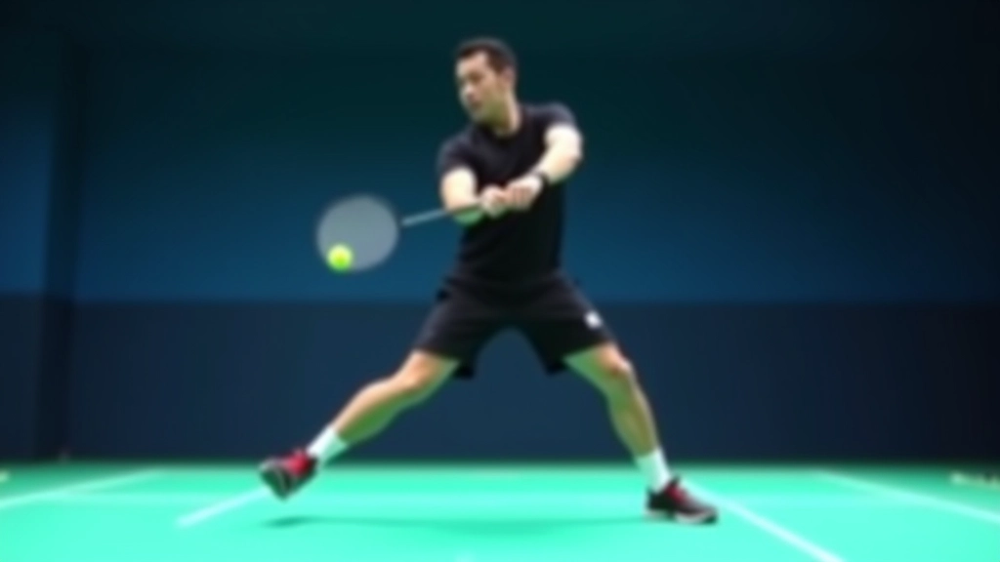
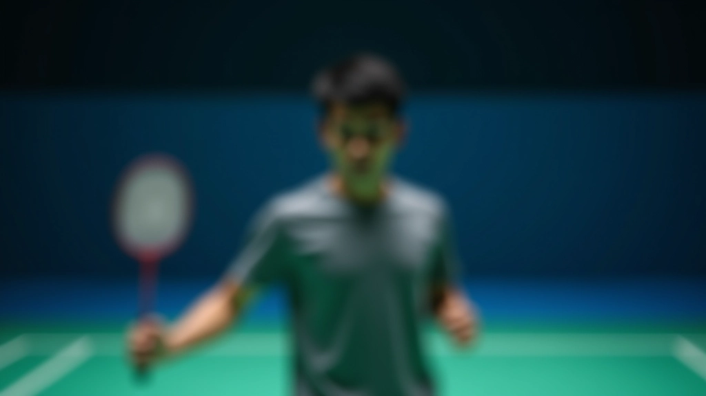
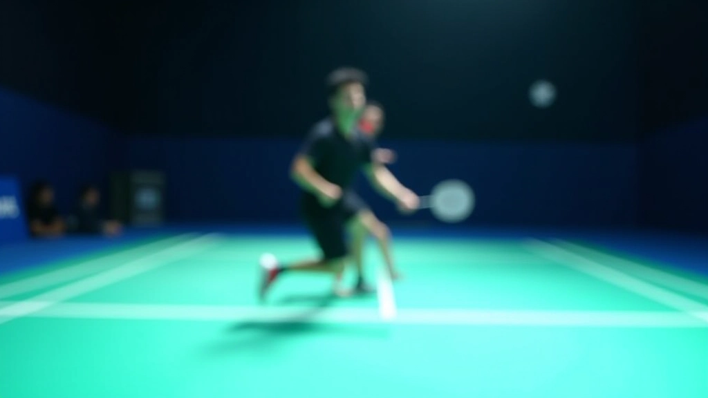
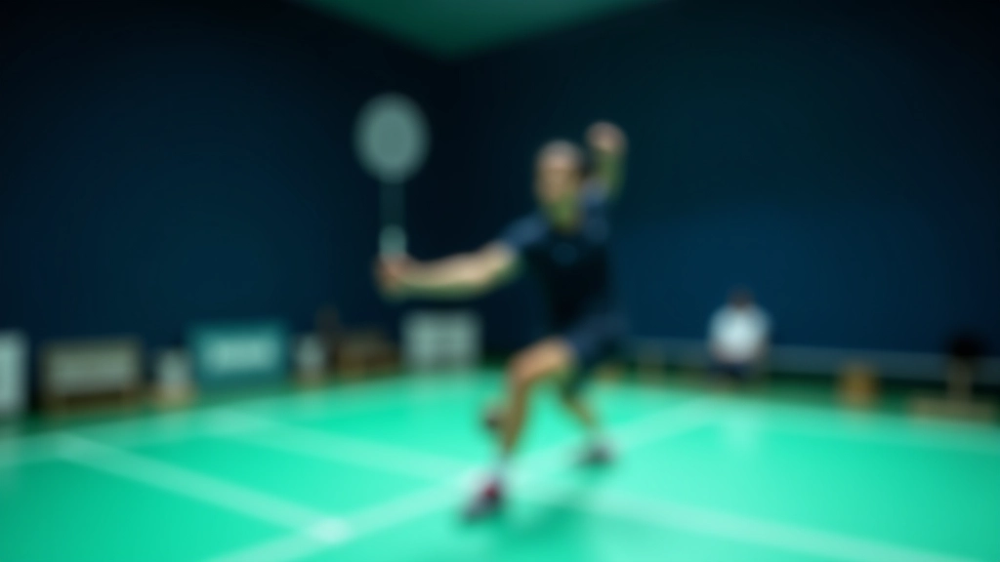
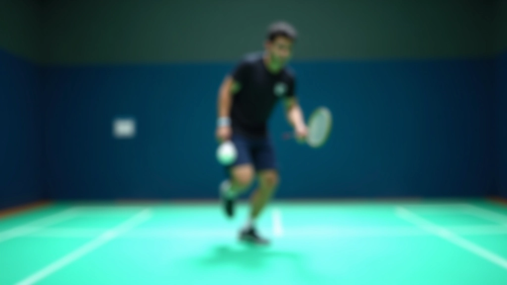

حركة القدمين المتقدمة والسرعة
تطوير سرعة الاستجابة والحركة الجانبية المتقدمة على ملعب الريشة الطائرة


كتبه
فريق حركة الريشة التحريري
فريق التحرير والمحتوى
كتبه فريق حركة الريشة التحريري، مختص بتقديم إرشادات عملية وسهلة التطبيق في مجال تدريب الريشة الطائرة.
لماذا تهم حركة القدمين المتقدمة
السرعة في الريشة الطائرة ليست فقط عن الركض السريع. إنها عن الحركة الذكية، الانطلاقة القوية، والاستجابة الفورية. عندما تتقن تقنيات حركة القدمين المتقدمة، ستشعر بفرق كبير في أدائك على الملعب — ستكون أسرع في الوصول إلى الريشة، وأكثر توازناً، وأقدر على تغيير الاتجاه بسهولة.
المستوى المتقدم يتطلب أكثر من الحركات الأساسية. تحتاج إلى فهم عميق لكيفية توزيع وزنك، ومتى تبدأ حركتك، وكيفية تحسين سرعة رد فعلك. هذه المقالة ستساعدك على فهم هذه التقنيات وتطبيقها.

التحضير والموضع الأولي
قبل أن تبدأ في الحركة السريعة، تحتاج إلى موضع صحيح. قف بقدميك على عرض أكتافك، ركبتاك مثنيتان قليلاً، ووزنك على كرات قدميك. هذا ليس وقوف عادي — إنه وضع تأهب يسمح لك بالانطلاق في أي اتجاه فوراً.
الخطأ الشائع هو الوقوف بثقل على الكعب. إذا فعلت هذا، ستتأخر عن منافسك بحوالي 0.2 ثانية — وهذا يحدث فرقاً كبيراً في الريشة الطائرة. حافظ على وزنك للأمام، على كرات قدميك، جاهزاً للحركة في أي لحظة.


خطوات الحركة السريعة والتنقل
هناك ثلاث أنواع رئيسية من الخطوات تحتاج إلى إتقانها. أولاً، خطوات الجري السريع — وهي الحركة التقليدية عندما تركض إلى الريشة. ثانياً، خطوات الانزلاق الجانبي — حيث تنزلق بقدميك بدلاً من عبور الخطوات، وهذا يحافظ على توازنك. ثالثاً، خطوات البونس — القفزات الصغيرة التي تبقيك في حالة حركة مستمرة.
اللاعبون المتقدمون يجمعون بين هذه الخطوات. لا تستخدم نفس النمط طوال الوقت. إذا كنت قريباً من الشبكة، استخدم خطوات أصغر. إذا كنت تركض لمسافة أطول، استخدم خطوات أطول. التكيف والمرونة هما السر.
العودة والتوازن بعد الضربة
الكثيرون يركزون على الوصول إلى الريشة بسرعة، لكنهم ينسون الجزء المهم — العودة إلى موضع الاستعداد. بعد أن تضرب الريشة، تحتاج إلى العودة إلى المركز بسرعة. ليس فقط أسرع قليلاً — بل بنفس السرعة التي جاءت بك إلى هناك.
الطريقة الفعالة هي استخدام خطوة صغيرة للعودة (step-back recovery). بعد ضربتك مباشرة، ادفع بقدميك للعودة. لا تركض للخلف — انزلق أو ادفع نفسك بقوة. هذا يوفر لك وقتاً ثميناً في الخصومات القريبة.

مقالات ذات صلة

البدء بتمارين السلم الأساسية
تعرف على الخطوات الأولى الصحيحة لتمارين سلم السرعة. تشرح هذه المقالة أنماط الحركة الأساسية والتقنيات البسيطة.
اقرأ المزيد
برنامج تمرين أسبوعي منظم
خطة عملية لتطبيق تمارين السلم بشكل منتظم. يتضمن جدول زمني واضح مع نصائح لتجنب الإصابات.
اقرأ المزيد
تحليل الحركة من الخبراء
تعلم من أخطاء شائعة يرتكبها اللاعبون. هذه المقالة تشرح ما يجب تجنبه وكيفية تصحيح الأخطاء.
اقرأ المزيدتمارين عملية للتطبيق الفوري
الآن بعد أن تعرفت على التقنيات، حان وقت التطبيق. ابدأ بتمرين بسيط: قف في مركز الملعب، ثم انطلق إلى الزاوية الأمامية اليسرى، عد للمركز، انطلق للزاوية الخلفية اليمنى، وهكذا. كرر هذا 10 مرات في كل اتجاه. في البداية، ستشعر بأن حركاتك بطيئة وثقيلة — هذا طبيعي. مع الممارسة، ستصبح أسرع وأخف وزناً.
التمرين الثاني أكثر تقدماً: طلب من صديق أو مدرب أن يشير إلى اتجاهات عشوائية، وأنت تنطلق فوراً في تلك الاتجاهات. هذا يحسّن ردود فعلك. كلما زادت السرعة، كلما تحسنت مهارتك. لا تتسرع في البداية — الجودة أهم من السرعة.

نصائح مهمة للتطور المستمر
احذ مناسبة
الأحذية الجيدة تحدث فرقاً كبيراً. اختر أحذية ريشة طائرة متخصصة توفر دعماً جانبياً قوياً وثباتاً. لا تستخدم أحذية جري عادية.
قوة الساقين
تمارين القوة مهمة. اقضِ 15 دقيقة ثلاث مرات أسبوعياً على تمارين الساقين — القرفصاء، الطعنات، والقفزات. هذا يحسّن انفجاريتك.
التركيز الذهني
السرعة تبدأ في الرأس. قبل كل حركة، ركّز على الهدف. تخيل الحركة قبل أن تفعلها. هذا يحسّن ردود فعلك بشكل ملحوظ.
سجل نفسك
استخدم هاتفك لتسجيل تمارينك. شاهد الفيديو بعدها وابحث عن الأخطاء. أحياناً لا تلاحظ الأشياء إلا عندما تراها.
الراحة والتعافي
لا تمارس التمارين كل يوم. أعطِ جسدك يوماً للراحة بين الجلسات المكثفة. التعافي الجيد يحسّن الأداء.
تحديد الأهداف
ضع أهدافاً محددة. مثلاً: "أريد الوصول إلى الزاوية الخلفية في 1.5 ثانية". قياس التقدم يساعدك على البقاء متحفزاً.
الخطوات التالية
تطوير حركة القدمين المتقدمة يتطلب الوقت والصبر. لن تصبح سريعاً بين عشية وضحاها. لكن إذا مارست بانتظام، وركزت على الجودة قبل السرعة، فستشعر بالفرق في غضون أسابيع قليلة.
ابدأ بالأساسيات، ثم تقدم تدريجياً. كرر نفس التمارين حتى تصبح طبيعية. مع الممارسة، ستصبح حركاتك أسرع وأكثر كفاءة. والأهم من كل شيء — استمتع بالعملية. الريشة الطائرة لعبة جميلة، والحركات السريعة الخاصة بك ستجعل اللعب أكثر متعة.
هل تريد معرفة المزيد عن تمارين السلم؟
استكشف جميع المواردملاحظة مهمة
هذه المقالة توفر معلومات تعليمية حول تقنيات حركة القدمين في الريشة الطائرة. المعلومات المقدمة مخصصة للتعلم والفهم العام فقط. قد تختلف النتائج من شخص لآخر حسب المستوى البدني والخبرة السابقة. إذا كنت جديداً على الرياضة أو تعاني من أي إصابات، ننصحك باستشارة مدرب محترف أو متخصص قبل البدء في أي برنامج تدريبي جديد. ممارسة الرياضة تتطلب حذراً، والسلامة أولاً.